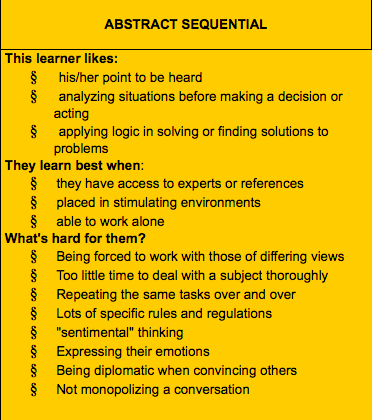

Have you ever considered how your thinking style affects your learning? Do you even know what your thinking style is? Here I journal my reflections on thinking style and learning, and how I can use my thinking style to help me learn to code. I recently discovered my thinking style (Gregorc Mind Style). I scored highest on Abstract Sequential (40) and Concrete Random (36).  People who are Abstract Sequential thinkers tend to be analytical and logical and learn best in stimulating environments with access to resources. They like working alone and have a hard time with lots of rules and time constraints that don't allow for thorough study, expressing their emotions, and repetition. Yep, I'd say this accurately reflects my style. Luckily, I think there are aspects that are beneficial for my learning and other things I can certainly work on. Being analytical and logical, I think, has largely served me well and I think it will as I continue my coding education. Learning how to express what I'm feeling diplomatically and having too little time to deal with a subject thoroughly are definitely things I am working on. Coding can be a rabbit hole and if allowed, I will go deep, and I want to. But, in thinking about doing this work for clients, I won't always have the luxury of having as much time as I would like to complete projects. This has by far been my biggest challenge so far in Phase 0. I need more time. I am learning ways to work faster and smarter by time-boxing, taking breaks to be more productive when I am working, and caring less. This latter one may sound harsh, but I must remember that I cannot let perfect be the enemy of the good. Learning to communicate better is also important, as developers work on teams. My experiences with pair programming thusfar have been good, I've gotten good feedback, and I'm practicing how to work with others on coding challenges. With me being pretty strong in Concrete Random thinking, I feel as if my mind style is well-rounded. I'm also a multi-modal learner, so making sure that I mix things up between audio, visual, hands-on, etc. is important.